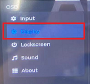
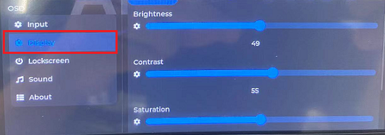
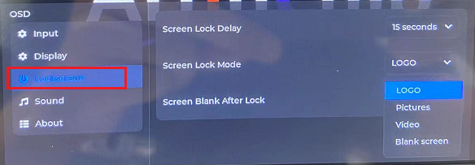

本地 UI 界面说明
15 Jan 2024
Read time: 1 minute(s)
OSD 菜单功能介绍
OSD 菜单主页提供了下列配置项，方便用户根据需求自定义：
图 1. OSD 菜单主页 Display 选项

| 主菜单选项 | 参数说明 |
|---|---|
| Display | 显示配置，可配置参数包括：
|
| Lockscreen | 待机配置，可配置参数包括：
|
Display 界面说明
在菜单的 Display 一栏中，支持对屏幕的 亮度 (Brightness)、对比度 (Contrast)、饱和度
(Saturation)、色调 (Hue) 进行调整。

Lockscreen 界面说明
在菜单的 Lockscreen 一栏中，支持对待机模式和待机时间参数进行调整。
